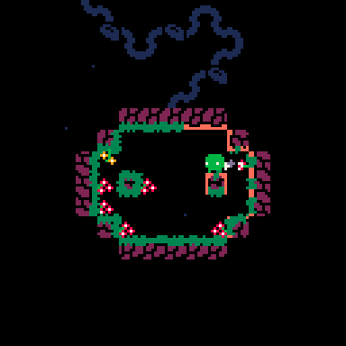
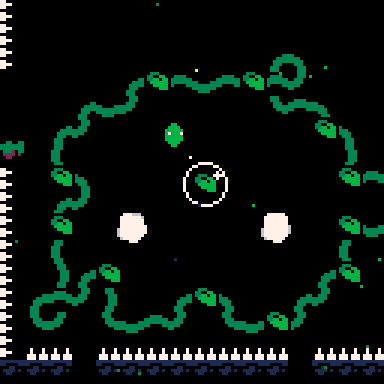

Game Overview
MooS is a charming, exploration-driven indie game where you guide
a small creature through misty environments and gentle puzzles.
The game blends environmental storytelling with simple platforming
mechanics and a strong sense of discovery.

Core Controls
-
Move: Use the arrow keys or WASD to walk.
-
Jump: Press the jump button to clear gaps and
reach higher platforms.
-
Interact: Approach glowing objects and press
the action key to activate or examine them.
Most of MooS's challenges rely on timing and observation rather
than fast reflexes, so take your time to explore each area.
Exploration Tips
The world of MooS is built around subtle paths and hidden routes.
Search for soft glows, unusual terrain, and walls that look
slightly different from the surroundings.
-
Listen for clues: Sound often signals an
important object or event nearby.
-
Use light carefully: Some puzzles require you
to guide light or shadows to reveal the next step.
-
Backtrack when needed: New areas may open after
solving a puzzle in a different zone.

Puzzle Strategy
MooS uses environmental puzzles that feel organic rather than
mechanical. Pay attention to how each object reacts to your
movement.
-
Observe the pattern: Walk around the puzzle and
note moving platforms, lights, and environmental triggers.
-
Stay calm: If a puzzle feels difficult, step
back and try a different angle. The solution is often about
timing rather than speed.
Survival and Progression
MooS is not a combat game, but it still asks you to avoid hazards
and use the environment wisely. Keep moving and explore every
path.
-
Watch your surroundings: Some surfaces can
collapse or hide new passages once triggered.
-
Collect carefully: Items are usually placed
near secrets, so don’t ignore small alcoves or side paths.
Final Advice
MooS is about atmosphere and thoughtful movement. Enjoy the slow
reveal of each area, and let the game’s visuals and audio guide
you. If you get stuck, scan the scene for subtle differences and
try interacting with every glowing object.
Play the game here:
MooS on itch.io
← Back to Game Guide Collection
Loading comments...